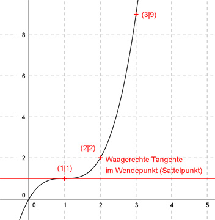

Aufgabe 55 Der Graph einer ganzrationalen Funktion 3. Grades geht durch (2|2), (3|9) und hat in (1|1) einen Wendepunkt mit waagerechter Tangente. Wie lautet seine Funktionsgleichung?  Allgemeine Form einer ganzrationalen Funktion 3. Grades: f(x) = ax3 + bx2 + cx + d f’(x) = 3ax2 + 2bx + c f’’(x) = 6ax + 2b 5 Bedingungen (eine mehr als nötig): 1. Geht durch den Punkt (2|2) bedeutet: f(2) = 2 --> a * 23 + b * 22 + c * 2 + d = 2 --> 8a + 4b + 2c + d = 2 I 2. Geht durch den Punkt (3|9) bedeutet: f(3) = 9 --> a * 33 + b * 32 + c * 3 + d = 9 --> 27a + 9b + 3c + d = 9 II 3. Hat in (1|1) einen Wendepunkt bedeutet erstens: f(1) = 1 --> a * 13 + b * 12 + c * 1 + d = 1 --> a + b + c + d = 1 III 4. Hat in (1|1) einen Wendepunkt mit waagerechter Tangente bedeutet zweitens: f’(1) = 0 --> 3a * 12 + 2b * 1 + c = 0 --> 3a + 2b + c = 0 IV 5. Hat in (1|1) einen Wendepunkt bedeutet drittens: f’’(1) = 0 --> 6a * 1 + 2b = 0 --> 6a + 2b = 0 V III * (-1) + I -a - b - c - d = -1 8a + 4b + 2c + d = 2 ---------------------- 7a + 3b + c = 1 VI III * (-1) + II -a - b - c - d = -1 27a + 9b + 3c + d = 9 ----------------------- 26a + 8b + 2c = 8 VII IV * (-1) + VI -3a - 2b - c = 0 7a + 3b + c = 1 ----------------- 4a + b = 1 VIII IV * (-2) + VII -6a - 4b - 2c = 0 26a + 8b + 2c = 8 ------------------ 20a + 4b = 8 IX VIII * (-4) + IX -16a - 4b = -4 20a + 4b = 8 --------------- 4a = 4 |:4 a = 1 a = 1 in VIII eingesetzt: 4 * 1 + b = 1 4 + b = 1 |-4 b = -3 a = 1 und b = -3 in IV eingesetzt: 3 * 1 + 2 * (-3) + c = 0 3 - 6 + c = 0 -3 + c = 0 |+3 c = 3 a = 1 und b = -3 und c = 3 in III eingesetzt. 1 - 3 + 3 + d = 1 1 + d = 1 |-1 d = 0 Überprüfung der 5. Bedingung: a = 1 und b = -3 eingesetzt: 6 * 1 + 2 * (-3) = 0 6 - 6 = 0 wahre Aussage Gesuchte Funktionsgleichung: f(x) = x3 - 3x2 + 3x